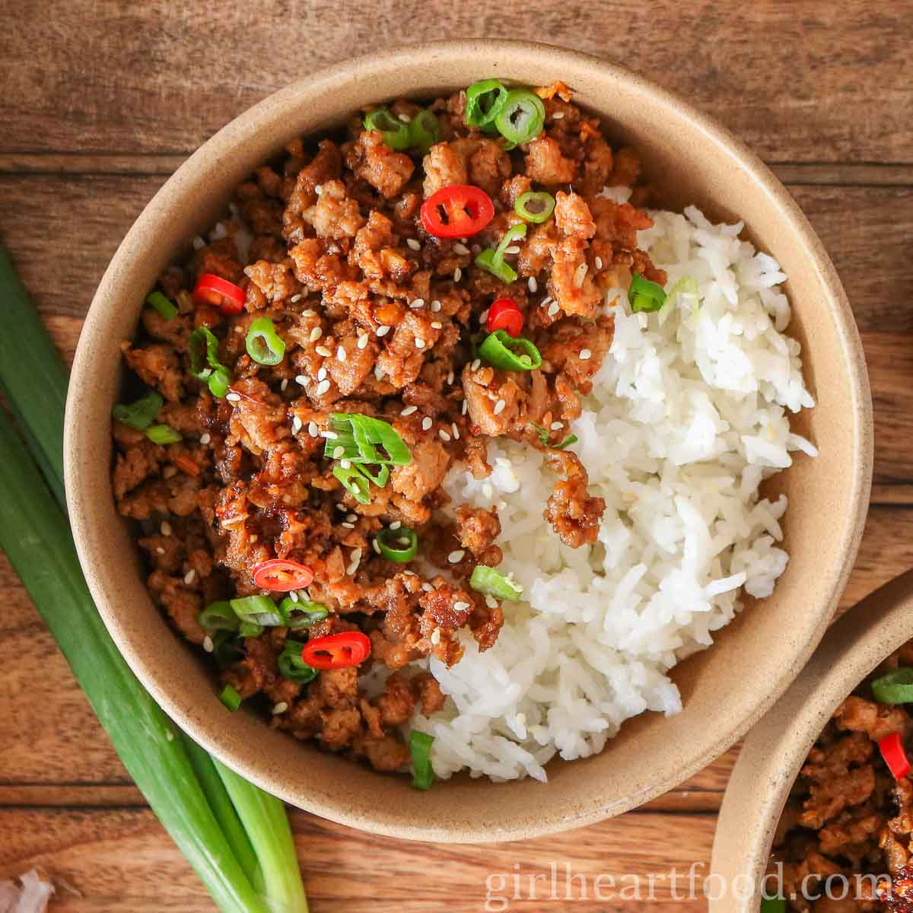

Turkey Bowl

Turkey bowls are a great way to have a balanced meal. Ground turkey can be low in fat and a great source of protein.
Depending on the other ingredients you add, you can get fiber and vitamins as well! Put it on your favorite rice
(brown, white, whatever you like) for a balanced and well rounded meal. For this recipe, you will need:
- Ground Turkey (the fat percentage is up to you, but I prefer 93% lean 7% fat for a good balance of protein and flavor!
- Rice of your choice
- 1 medium sweet onion
- 5 cloves of garlic
- Salt and pepper, to taste
Steps:
- 1. Prepare chosen rice with chosen method
- 2. Heat up a pan to medium high heat
- 3. Add oil to the pan
- 4. Dice garlic and onions
- 5. Add diced garlic and onions to the pan, cook until slightly translucent
- 6. Remove the garlic and oil from the pan but keep the oil in the pan. Add turkey to pan, cook until golden brown.
- 7. Lower the heat and return the garlic and onion to the pan.
- 8. Mix well and remove from heat. Serve warm on a bed of rice.